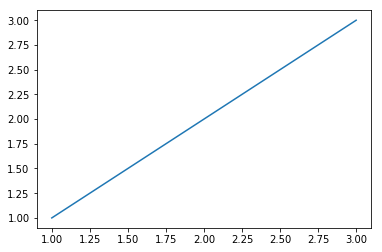
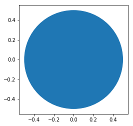
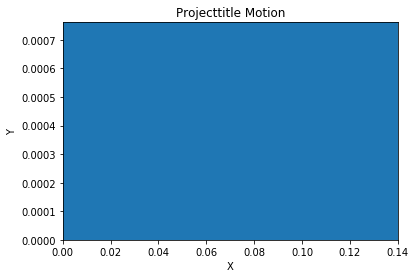
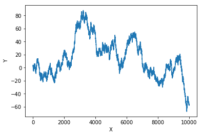
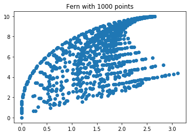
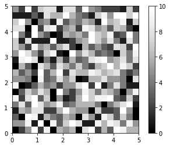

幾何図形とフラクタルを描画する¶
matplotlibのパッチで幾何図形を描く¶
[3]:
import matplotlib.pyplot as plt
x = [1, 2, 3]
y = [1, 2, 3]
plt.plot(x, y)
plt.show()

[2]:
import matplotlib.pyplot as plt
x = [1, 2, 3]
y = [1, 2, 3]
fig = plt.figure()
ax = plt.axes()
plt.plot(x,y)
plt.show()
円を描く¶
[4]:
'''
matplotlibの円パッチの使用例
'''
import matplotlib.pyplot as plt
def create_circle():
circle = plt.Circle((0, 0), radius=0.5)
return circle
def show_shape(patch):
ax = plt.gca()
ax.add_patch(patch)
plt.axis('scaled')
plt.show()
if __name__ == '__main__':
c = create_circle()
show_shape(c)

図形のアニメーションを作る¶
[1]:
'''
大きくなる円
'''
from matplotlib import pyplot as plt
from matplotlib import animation
def create_circle():
circle = plt.Circle((0, 0), 0.05)
return circle
def update_radius(i, circle):
circle.radius = i * 0.5
return circle
def create_animation():
fig = plt.gcf()
ax = plt.axes(xlim=(-10, 10), ylim=(-10, 10))
ax.set_aspect('equal')
circle = create_circle()
ax.add_patch(circle)
anim = animation.FuncAnimation(fig, update_radius, fargs=(circle,), frames=30, interval=50)
plt.title('Simple Circle Animation')
plt.show()
if __name__ == '__main__':
create_animation()
[1]:
<Figure size 640x480 with 1 Axes>
投射軌跡のアニメーション¶
[3]:
'''
投射運動オブジェクトの軌跡アニメーション
'''
from matplotlib import pyplot as plt
from matplotlib import animation
import math
g = 9.8
def get_intervals(u, theta):
t_flight = 2 * u * math.sin(theta) / g
intervals = []
start = 0
interval = 0.005
while start < t_flight:
intervals.append(start)
start = start + interval
return intervals
def update_position(i, circle, intervals, u, theta):
t = intervals[i]
x = u * math.cos(theta) * t
y = u * math.sin(theta) * t - 0.5 * g * t * t
circle.center = x, y
return circle
def create_animation(u, theta):
intervals = get_intervals(u, theta)
xmin = 0
xmax = u * math.cos(theta) * intervals[-1]
ymin = 0
t_max = u * math.sin(theta) / g
ymax = u * math.sin(theta) * t_max - 0.5 * g * t_max ** 2
fig = plt.gcf()
ax = plt.axes(xlim=(xmin, xmax), ylim=(ymin, ymax))
circle = plt.Circle((xmin, ymin), 1.0)
ax.add_patch(circle)
anim = animation.FuncAnimation(fig, update_position, fargs=(circle, intervals, u, theta), frames=len(intervals),
interval=1, repeat=False)
plt.title('Projecttitle Motion')
plt.xlabel('X')
plt.ylabel('Y')
plt.show()
if __name__ == '__main__':
try:
u = float(1)
theta = float(1)
except ValueError:
print('You entered an invalid input')
else:
theta = math.radians(theta)
create_animation(7, theta)

平面上の点の変換¶
[2]:
'''
２つの等確率変換を選ぶ例
'''
import matplotlib.pyplot as plt
import random
def transformation_1(p):
x = p[0]
y = p[1]
return x + 1, y - 1
def transformation_2(p):
x = p[0]
y = p[1]
return x + 1, y + 1
def transform(p):
transformations = [transformation_1, transformation_2]
t = random.choice(transformations)
x, y = t(p)
return x, y
def build_trajectory(p, n):
x = [p[0]]
y = [p[1]]
for i in range(n):
p = transform(p)
x.append(p[0])
y.append(p[1])
return x, y
if __name__ == '__main__':
p = (1, 1)
n = int(10000)
x, y = build_trajectory(p, n)
plt.plot(x, y)
plt.xlabel('X')
plt.ylabel('Y')
plt.show()

バーンスレイのシダを描く¶
[15]:
'''
バーンスレイのシダを描く
'''
import random
import matplotlib.pyplot as plt
def transformation_1(p):
x = p[0]
y = p[1]
x1 = 0.85 * x + 0.04 * y
y1 = -0.04 * x + 0.85 * y + 1.6
return x1, y1
def transformation_2(p):
x = p[0]
y = p[1]
x1 = 0.2 * x + 0.26 * y
y1 = 0.23 * x + 0.22 * y + 1.6
return x1, y1
def transformation_3(p):
x = p[0]
y = p[1]
x1 = -0.15 * x + 0.28 * y
y1 = 0.26 * x + 0.24 * y + 0.44
return x1, y1
def transformation_4(p):
x = p[0]
y = p[1]
x1 = 0
y1 = 0.16 * y
return x1, y1
def get_index(probability):
r = random.random()
c_probability = 0
sum_probability = []
for p in probability:
c_probability += p
sum_probability.append(c_probability)
for item, sp in enumerate(sum_probability):
if r <= sp:
return item
return len(probability) - 1
def transform(p):
# 変換関数のリスト
transformations = [transformation_1, transformation_2, transformation_3, transformation_4]
probability = [0.85, 0.07, 0.07, 0.01]
# ランダム変換関数を選ぶ
tindex = get_index(probability)
t = transformations[tindex]
x, y = t(p)
return x, y
def draw_fern(n):
# (0, 0)から始める
x = [0]
y = [0]
x1, y1 = 0, 0
for i in range(n):
x1, y1 = transform((x1, y1))
x.append(x1)
y.append(y1)
return x, y
if __name__ == '__main__':
n = int(1000)
x, y = draw_fern(n)
# 点をプロット
plt.plot(x, y, 'o')
plt.title('Fern with {0} points'.format(n))
plt.show()

[18]:
import matplotlib.pyplot as plt
import matplotlib.cm as cm
import random
def initialize_image(x_p, y_p):
image = []
for i in range(y_p):
x_colors = []
for j in range(x_p):
x_colors.append(0)
image.append(x_colors)
return image
def color_points():
x_p = 20
y_p = 20
image = initialize_image(x_p, y_p)
for i in range(y_p):
for j in range(x_p):
image[i][j] = random.randint(0, 10)
plt.imshow(image, origin='lower', extent=(0, 5, 0, 5),
cmap=cm.Greys_r, interpolation='nearest')
plt.colorbar()
plt.show()
if __name__ == '__main__':
color_points()
